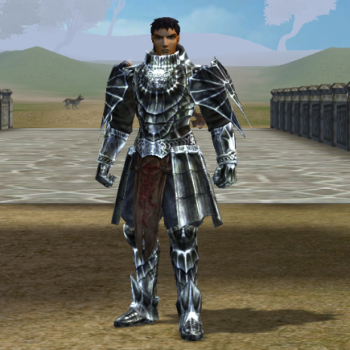
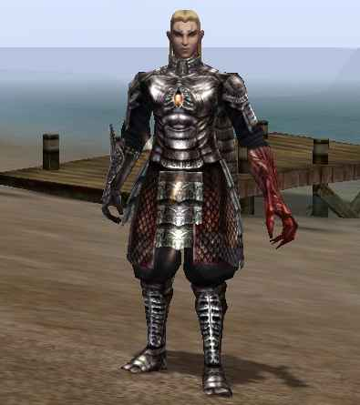
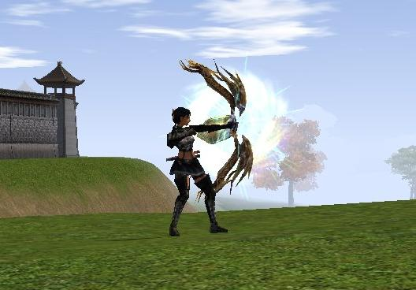
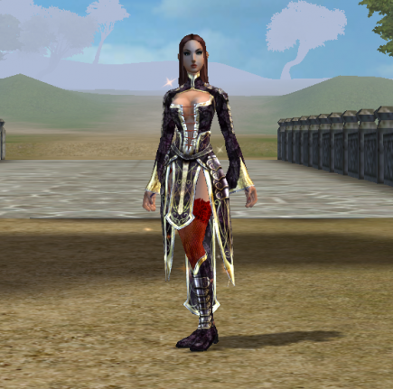

Benvenuto nell'affascinante mondo di Metin2, un avvincente gioco di ruolo online multiplayer massivo (MMORPG) che ti permette di immergerti in un universo ricco di miti, arti marziali e avventure. Nel mondo di Metin2, avrai l'opportunità di scegliere una classe di personaggio unica, ognuna con le sue abilità, caratteristiche e stili di gioco distinti. Questa guida ti fornirà una panoramica dettagliata delle diverse classi disponibili nel gioco, consentendoti di fare una scelta informata per creare il tuo leggendario eroe.
Guerriero
I guerrieri sono potenti combattenti che si immergono in battaglia con armi pesanti e armature resistenti. Essi incarnano la forza bruta e l'abilità nel combattimento corpo a corpo. Ci sono due specializzazioni principali per i guerrieri:
Corpo a Corpo
I guerrieri "Corpo a Corpo" sono esperti nel maneggiare spade e asce giganti. Sono maestri nel fronteggiare nemici direttamente e infliggere danni devastanti. La loro elevata resistenza li rende formidabili avversari in prima linea.
Mentale
I Guerrieri "Mentali" sono guerrieri magici che combinano l'abilità nelle arti marziali con l'uso della magia. Possono utilizzare incantesimi per migliorare le loro abilità di combattimento e infliggere danni sia fisici che magici ai loro nemici.
Sura
I Sura sono potenti combattenti che si immergono in battaglia con l'uso della magia. Essi incarnano la magia oscura o buona e l'abilità nel combattimento corpo a corpo. Ci sono due specializzazioni principali per i Sura:
Sura Nero: Signori delle Ombre
I Sura Neri incarnano il potere oscuro e misterioso delle ombre. Sono in grado di evocare incantesimi magici oscuri e manipolare le forze dell'oscurità per infliggere danni devastanti ai loro nemici. I Sura Neri sono combattenti magici versatili che sfruttano abilmente la loro conoscenza delle arti magiche e la loro destrezza fisica per dominare il campo di battaglia.
Sura Bianco: Guardiani della Luce
I Sura Bianchi rappresentano il lato luminoso della magia, focalizzandosi sulla guarigione, la protezione e il supporto ai compagni di squadra. Sono i custodi della luce e della speranza, impegnati a mantenere l'equilibrio nelle terre di Manchuria.
Ninja
I ninja sono maestri dell'agilità e dell'arte dell'assassinio. Usano armi agili come pugnali e spade corte per colpire i loro avversari con rapidità e precisione. Ci sono due specializzazioni principali per i ninja:
Arma Veloce
Gli Assassini sono specialisti nell'utilizzo di armi veloci come pugnali. Possono infliggere colpi critici rapidi e sferrare attacchi fulminei, rendendoli letali avversari in combattimento ravvicinato.
Avvelenatore
Gli Avvelenatori combinano l'abilità nell'uso delle armi agili come anche archi con la magia del veleno. Possono infliggere danni a lungo termine ai nemici attraverso incantesimi velenosi e hanno abilità uniche per controllare il campo di battaglia.
Chamano
Gli chamani sono esperti nel lancio di incantesimi e nella manipolazione degli elementi. Possono guarire gli alleati e infliggere danni ai nemici utilizzando potenti incantesimi. Ci sono due specializzazioni principali per i chaman:
Magia Bianca
I Guaritori sono dediti alla cura e al supporto del gruppo. Possono guarire ferite, curare stati alterati e proteggere i loro compagni con potenti incantesimi di guarigione e difesa.
Magia Nera
I Maghi della Magia Nera possono evocare potenti incantesimi elementali per infliggere danni ai nemici. Sono in grado di colpire da lontano e possono causare devastazione in campo di battaglia attraverso incantesimi distruttivi.
